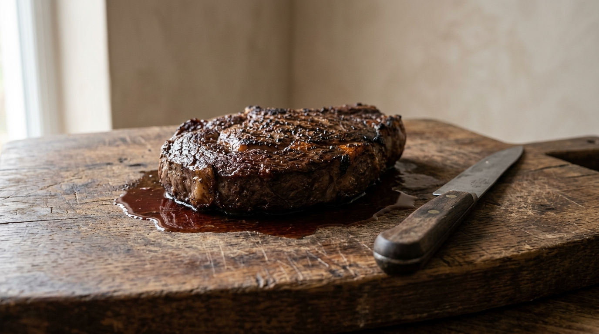
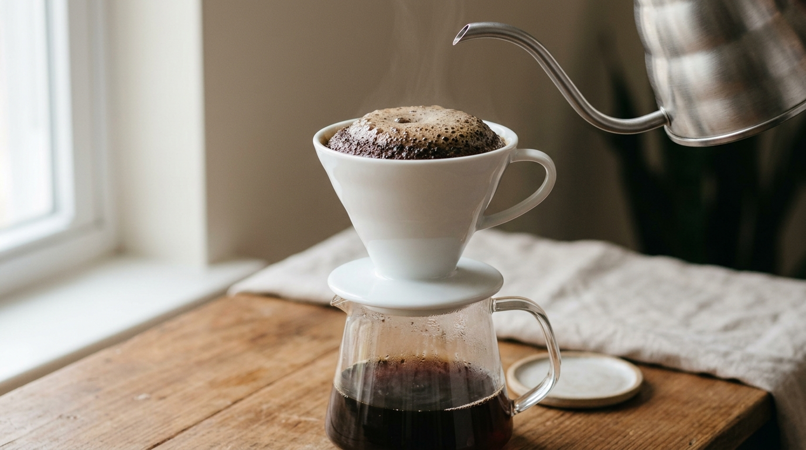
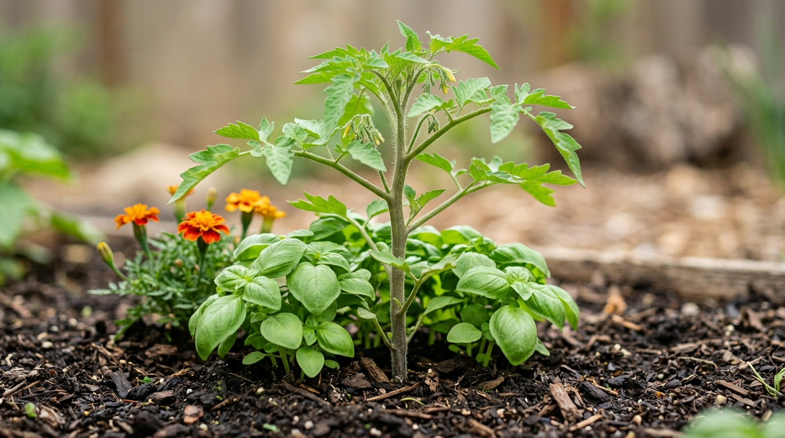
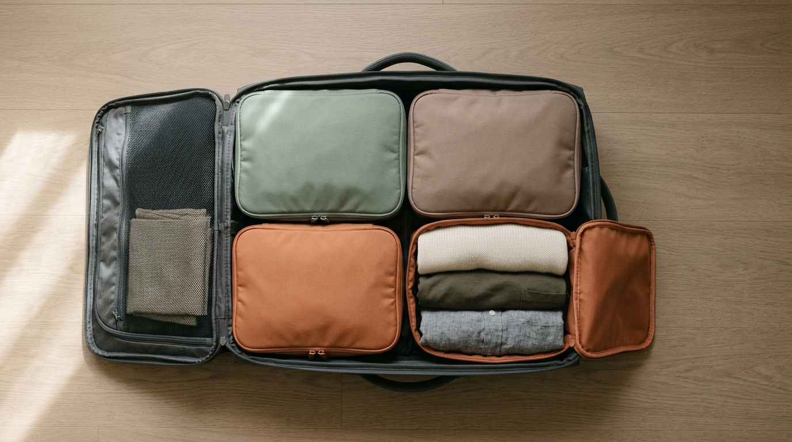

Shapes
Every page shape, on one canvas.
One page per shape, on purpose.
Shapes
Every page shape, on one canvas.
Cookbook theme, B5. One concept per page.
Ac 2026 The paper engine. All rights reserved.
Edition 1.0 · hassancs91.github.io/paper-engine
Contents
Craft
The shapes that make and mend: numbered steps, and one that is a lookup.
- 01Resting meat
- 02The bloom
- 03Companion planting
- 04Packing cubes
Resting meat: Why the same bird is tough on Monday and tender on Thursday. One page from the shapes book, on the strict canvas.
Resting meat

- Salt it, and do not rinse it off.
- Leave it uncovered in the fridge. A skin needs air to dry.
- Wait until the surface feels like dry paper.
- Cook it skin-side down, then rest it. Resting is the step that moves the juice back in.
Dry surface, uncovered air, and a rest you nearly skipped.
I am cooking a whole chicken tonight. How long uncovered in the fridge for a bird this weight, and how do I tell the surface is ready?
The bloom: The yeasts doing the work are not the ones you buy. One page from the shapes book, on the strict canvas.
The bloom

- Flour and water only, mixed until no dry patches remain.
- Leave it somewhere cool. Sharp smell first, then fruity.
- Feed it again. The sour smell is the bloom arriving, not the starter spoiling.
The smell tells you when to feed it. The clock never did.
Here is my starter and when I last fed it. What should it smell like now, and how much flour and water should I add?
Companion planting: Two beds side by side, and the reason one fails. One page from the shapes book, on the strict canvas.
Companion planting

| Pair | What it does |
|---|---|
| Onions, carrots | deters the carrot fly. smaller than the folklore |
| Beans, sweetcorn | the beans fix the nitrogen the corn wants |
| Basil, tomatoes | overstated. still worth side by side |
| Marigolds | unfalsifiable. grow them, they are cheap |
A claimed pairing is worth one season, not a lifetime.
Here are my crops and the space I have. Which should sit side by side, and which pairings are folklore?
Packing cubes: A freezer you can read without opening it. One page from the shapes book, on the strict canvas.
Packing cubes

Goal: cook a week of dinners in one evening, then decide nothing after eight.
- Cook five meals you would eat twice.
- Label each bag: dish, date, stove time.
- Freeze sauces loose from the protein.
If you cannot build dinner from the labels alone, the labels are wrong.
Here are the meals I cook and the freezer space I have. What do I cook on Sunday, and how do I label each bag?
Practice
Two pages that are a task with a stated goal and a check.
- 01Golden hour
- 02Progressive overload
Golden hour: The hour that makes a photograph, and how to find it. One page from the shapes book, on the strict canvas.
Golden hour
- Find the hour the sun is low and behind your subject.
- Look for the shadow falling away from the lens.
- Move until that shadow goes behind the subject.
- Shoot with the sun just out of frame.
Find the shadow before you find the light.
I shoot outdoors with one body and one lens. What are the three checks I can make in ten seconds to tell whether the light is good?
Progressive overload: Add a little, sleep, then add again. One page from the shapes book, on the strict canvas.
Progressive overload
Goal: add weight to your main lift every week without hurting yourself.
- Add weight only when last week was clean.
- Add the smallest amount the bar allows.
The check: this week’s weight against last week’s.
The week you stall is data, not failure.
Here is my lift and eight weeks of weights and reps. What do I lift this week, and where does that log say to stop progressing?
Money
A page that is almost entirely steps, because that is what it needs to be.
- 01The emergency fund
The emergency fund: One number, and the discipline not to touch it. One page from the shapes book, on the strict canvas.
The emergency fund
- Count essentials only: rent, food, transport, minimum debt payments.
- Turn that into a number of months you could survive on.
- Put it in a separate account, so spending it is deliberate.
- Replenish it before you invest anything else.
A separate account is not a budget. It is a wall.
Here are my monthly essentials and my take-home pay. How many months should I aim for, and how do I set it up where I will not see it as spending?